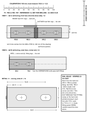

T5Corner fitting (P08) placement · reference SOURCE-DEFINEDVERIFIED
Template T5 · rev 2026-10-23
numbers: manual/facts.json + data.json, source_commit: HEAD of https://github.com/scotthowson/desk-setup on 23 Oct 2026 (supersedes a2e99ea with measured facts)
!PRINT AT 100% / ACTUAL SIZE
DISABLE FIT TO PAGE / shrink to fit / scale to fit. Measure the ruler before use: 0 to 100 must read 100.0 mm and the cross-check bar 50.0 mm (±0.5). If either is off, do not use the sheet: reprint.
